Personal · Five heads produced
Milled Putter
Five putter heads cut from 6061 on a five-axis mill, designed to the USGA equipment rules, anodised in a bath I built and set up by hand. The project where I learned the full CAD to FEA to CAM to part chain on something I use.
- Material
- 6061 aluminium
- Target head mass
- 340–360 g
- MOI
- 2,700 → 3,294 g·cm²
- Face loft
- 4°
- Machine
- HAAS UMC-500, 5-axis
- Cycle time
- 5 h → 2 h per head
- Finish
- Type II anodise, dyed
- Produced
- 5 complete putters
Why a putter
I wanted a project that would take me through finite element analysis and real manufacturing on something I would actually use. Golf is one of my hobbies and I liked the idea of making the precision decisions about my own club that most golfers never think about: head mass, moment of inertia, where the weight sits relative to the face.
A putter is the right first club. Impact forces are low so the structure is forgiving, but the mass properties matter just as much as they do anywhere else in the bag. It looks like the simplest club made and there is a surprising amount going on underneath.
I read the USGA equipment rules properly before drawing anything, which turned out to be a genuine design input rather than a formality.
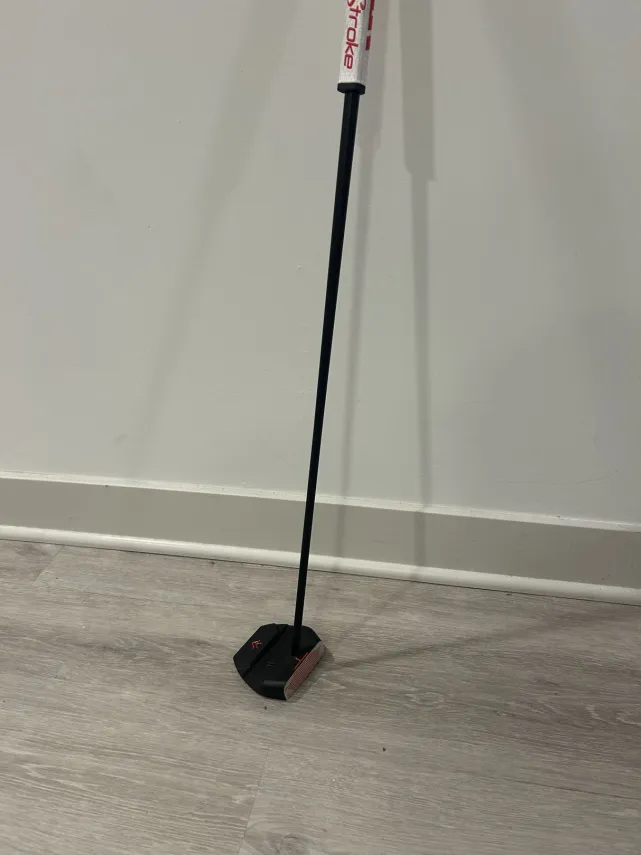
CAD
I started by researching real putter specifications: shaft and face angles, head width and height, weight distribution and groove geometry. Then base sketches, with anything I was not certain about left as a driving parameter rather than a hard number.
I targeted 340–360 g head mass using material-based mass properties in Fusion to track weight while modelling. The whole model is parametric, so adjusting heel or toe mass updates centre of mass and moment of inertia automatically, which is what makes MOI something you can design toward rather than measure afterwards and accept.
I kept machining in mind the entire time. No feature or sharp transition went into the model that I did not have a plan to reach with a tool.
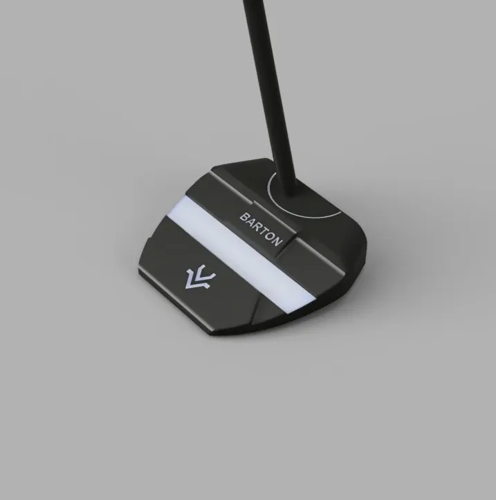
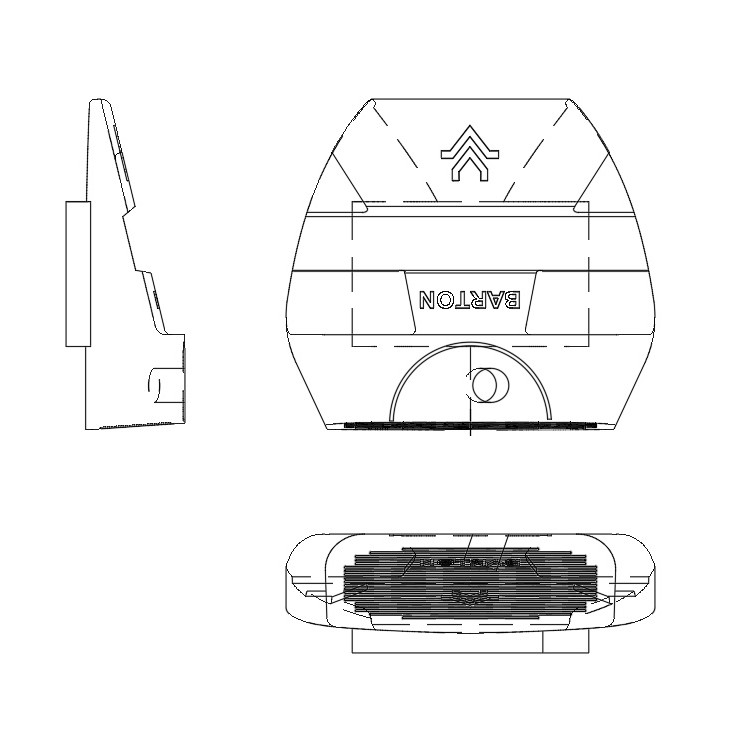
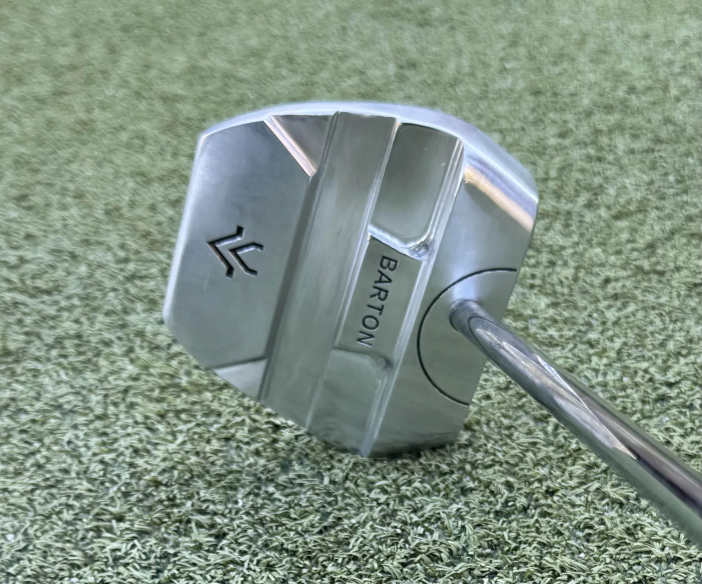
Finite element analysis
I ran a linear static study on the head in SpaceClaim, loading the centre of the face with a 0.5 kg impact to check face deflection and look at how stress distributed into the body.
Peak face flex came out at 0.12–0.18 mm, and back torsion on the final geometry was lower than on the first design that failed. The number that mattered most was moment of inertia: adding 60 g of heel mass took MOI from 2,700 to 3,294 g·cm², which measurably reduces twisting on off-centre strikes.
The analysis was not there to certify anything. It was there to confirm the head would hold face orientation comparably to a commercial putter, and to tell me whether the mass I was adding was doing what I thought it was.
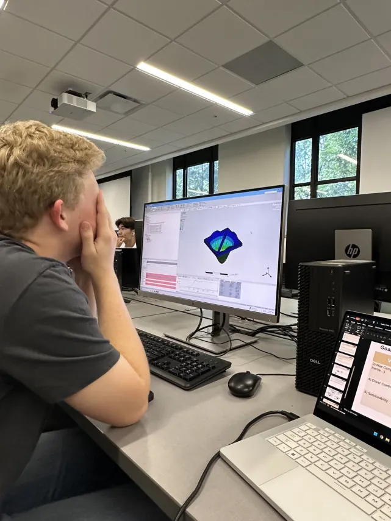
- Load case
- 0.5 kg impact, centre face
- Peak face deflection
- 0.12–0.18 mm
- MOI before
- 2,700 g·cm²
- Heel mass added
- 60 g
- MOI after
- 3,294 g·cm², a 22% increase
CAM
Toolpaths were generated in Fusion. I programmed full multi-axis operations first and hit part collisions in simulation, so for the first head I fell back to 3D toolpaths with the five-axis orientations set manually, parallel to whichever face was being cut. It ran longer and it ran safely, which is the correct trade on a first article.
Afterwards I went back and found the actual cause: translation accelerations in the multi-axis motion, where the rotary table kept moving without correctly timing the linear travel. Once corrected I ran full multi-axis for the remaining three heads.
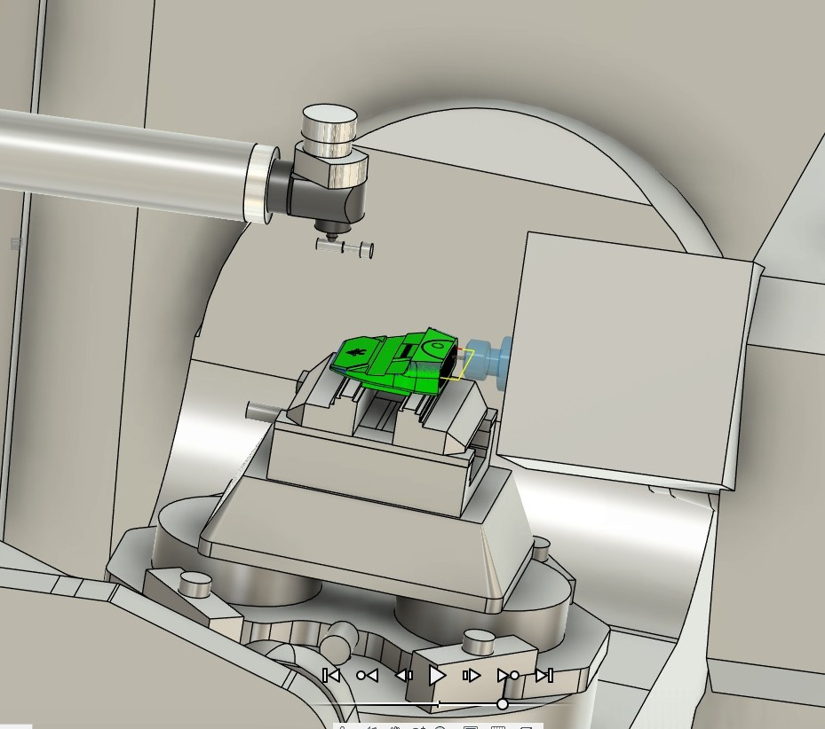
Cycle time per head, both operations, dropped from about five hours to about two once the multi-axis motion was fixed. Going back to diagnose a problem I had already worked around was worth three hours a part.
Production note
Five-axis machining
Stock prep matters more than people expect. I cut 6061 down on the vertical and horizontal bandsaws, then faced every side on a manual mill with a fly cutter, because every surface needed to be true for probing. An hour of prep per part saves considerably more than an hour later.
All five heads were cut on a HAAS UMC-500. Operation one machines the face and top half, bores the shaft hole and engraves the grooves and alignment aids. Operation two flips the part and indicates off the face.
The design decision that made operation two easy was made months earlier in CAD: I put the upper shaft interface perpendicular to the 4° lofted face, which gives a consistent, repeatable workholding datum without soft jaws. Designing for the fixture is design work, not shop work.
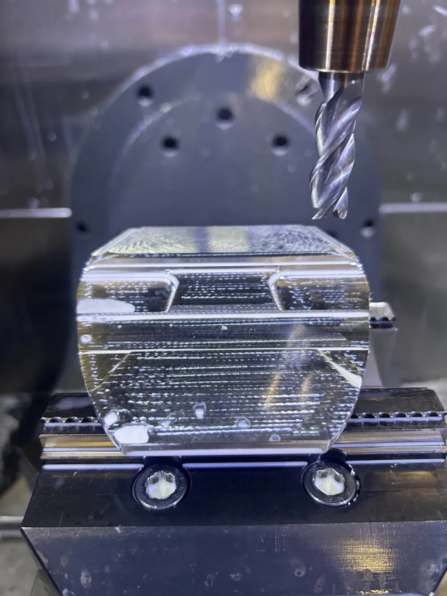
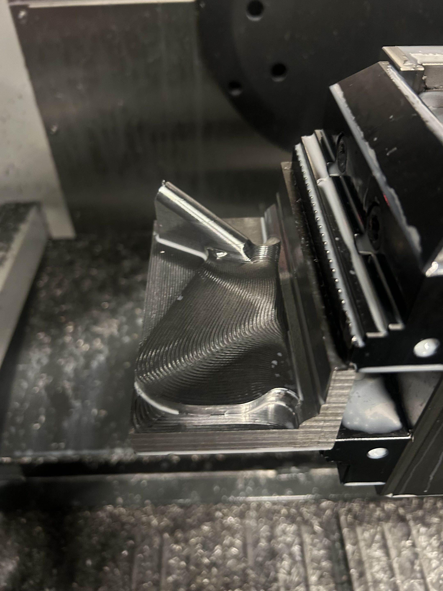
- Stock prep
- ~1 h per head
- Machining
- 2–3 h per head, both operations
- Op 1
- Face, top half, shaft bore, grooves, alignment aids
- Op 2
- Flip, indicate off the face, finish the sole
- Workholding
- Shaft interface designed perpendicular to the face: no soft jaws
Post-processing
Every edge got a deburring pass. Even with good toolpaths, burrs form at sharp transitions, particularly around the grooves and cavity edges. Hand tools and small files to break the corners, then progressive sanding from 320 to 600 grit to remove tool marks.
The discipline here is knowing which edges are decorative and which are dimensional. I deliberately did not round anything near the face or the alignment features. The grooves were cleaned with fine files and steel wool to keep depth consistent and the edges crisp.
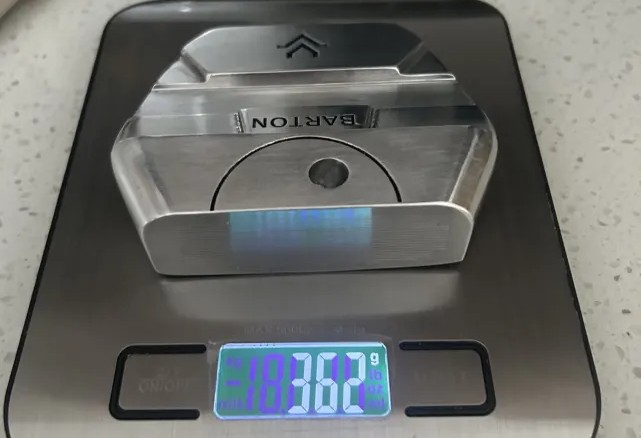
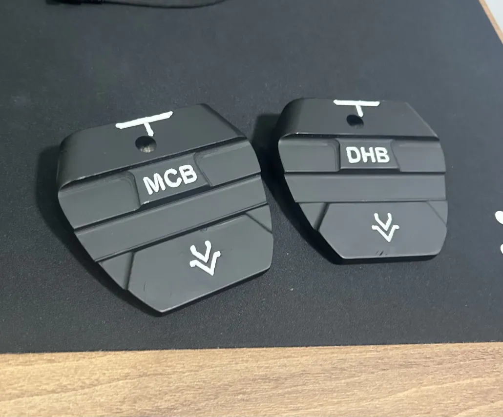
Anodising
I anodise at home, and this is where the process gets satisfyingly numerical. Surface area straight out of CAD was 0.25256 sq ft. At 12 amps per square foot, that is 3.03 A, so the supply goes into current control at 3 A and stays there for about an hour.
Positive lead to titanium wire as the anode, negative to a lead cathode strip, part suspended in sulfuric acid for Type II. Gloves and tongs throughout: a fingerprint is an oil contamination that shows up in the finish. After anodising: rinse, ten minutes in a heated dye bath, then seal in boiling water to close the pores and lock the colour in.
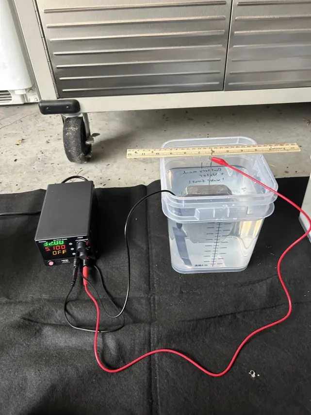
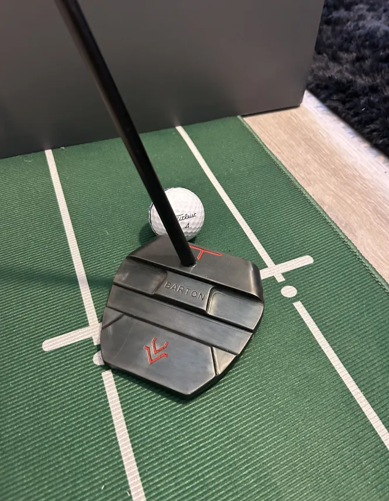
Assembly is shaft cut to length, tip sanded for adhesion, epoxy brushed on and inserted with the face aligned before it cures. Then double-sided tape, solvent, and the grip slid on in one motion and squared to the face before it dries. Every one of the five ended up a slightly different length, because that part is preference and not engineering.
What went wrong
Failure V1 · Machining
A two-material design that chattered the endmill to pieces
The first design split the head into a steel sole plate and an aluminium upper, to keep the centre of gravity low and the profile shallow. Machining the upper half generated severe chatter, which shattered the endmill and destroyed the part.
Fix
Redesign as a single material with geometry that supports the cut. A design that is theoretically better and cannot be made is worse.
Failure V2 · Multi-axis motion
The rotary kept turning while the linear travel lagged
After the redesign, the machine gouged the part: the rotary table continued rotating without correctly timing the translation, and the endmill took a large bite out of the head very quickly.
Fix
Correct the translation accelerations in the multi-axis post. This is also what unlocked the drop from five hours to two per head.
Failure V2 · In use
Glare off a mirror finish, discovered on the course
The finished polished head reflected sunlight straight into my eyes at address. A perfectly good part that was unusable in the environment it was made for.
Fix
Anodise. It fixed the glare, improved corrosion resistance and made the putter look considerably better, which is how the whole anodising setup came to exist.
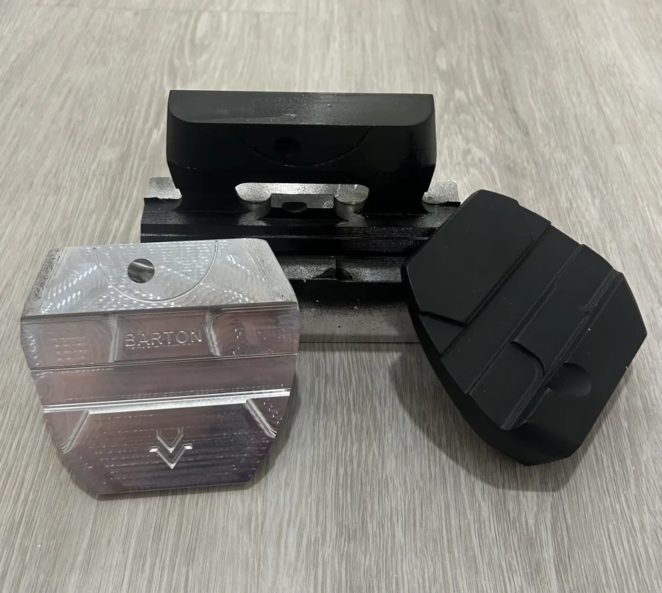
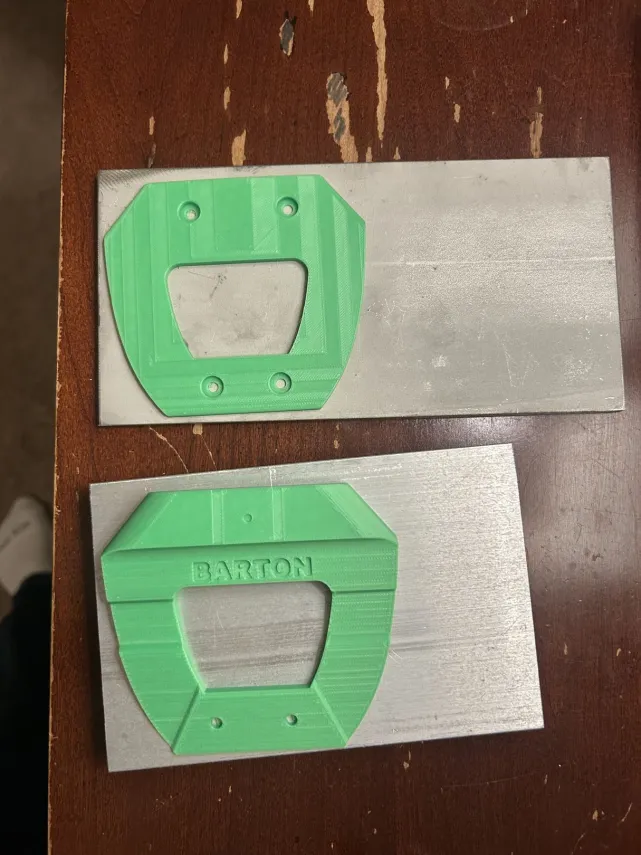
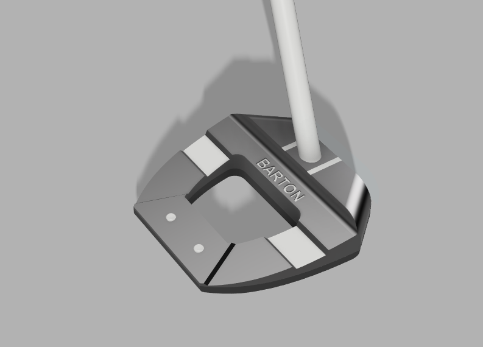

Next
A modular head with interchangeable weights, and the seven iron on sheet 09.
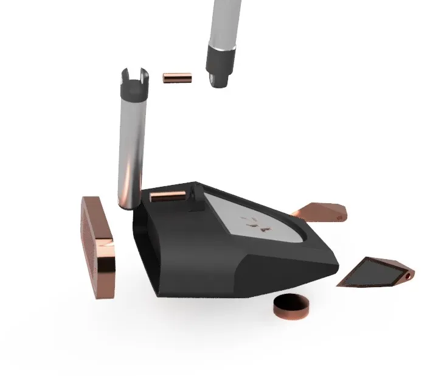
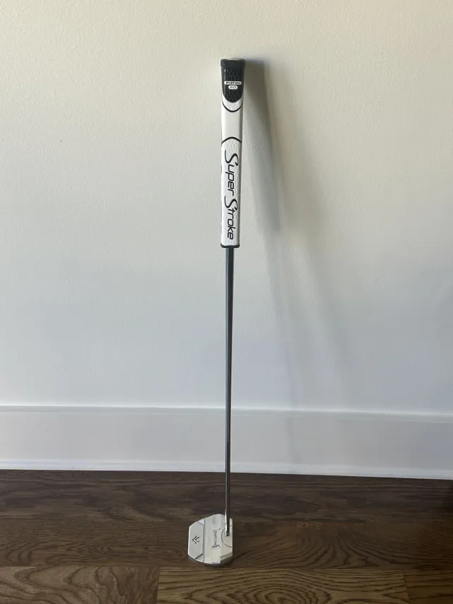